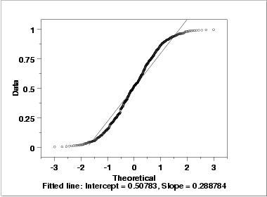

"For You light my lamp; the LORD my God illumines my darkness.
For by You I can run upon a troop; and by my God I can leap over a wall.
As for God, His way is blameless; the word of the LORD is tried;
He is a shield to all who take refuge in Him."
-- Psalm 18:28-30
- Say that in a certain town 60% of the people vote Conservative,
and the probability that a townsperson drives a large truck is 4/7.
If you pick a random townsperson, there is a 27% chance that the townsperson
is a Conservative driving a large truck.
- What fraction of Conservatives in this town drive large trucks?
[3]
Let C = Conservative, T = drives a large truck.
P(T|C) = P(T and C) / P(C) = .27 / .60 = 45%
- In this town, is voting Conservative independent of driving a
large truck? Why or why not? Interpret what this means in the context
of the townspeople.[3]
P(T|C) = 45%, but P(T) = 4/7 ≈ 57%, so the two events are
not independent.
In this town, the Conservatives are less likely to drive large trucks
than the non-Conservatives (perhaps contrary to stereotypes!).
-
Classify each of the following statements (which may or may not be true) as
either (D)escriptive or (I)nferential: [4]
- About 90% of students in our MATH108 class are nursing students.
[(D)escriptive]
- 30.1% of male registered nurses (RNs) are
under the age of 40. [(I)nferential]
- 19.2% of BC residents in 2004 were clinically obese. [(I)nferential]
- Of the children and adolescents studied in the 2004 Canadian Community
Health Survey, 8% were clinically obese. [(D)escriptive]
-
Mark each of the following variables as categorical (G), ordinal (O),
discrete (D), or continuous (C): [5]
- Hemoglobin count, in g/dL [(C)ontinuous]
- Age, divided into categories "0-10", "11-18", "19-25", "26-39",
"40-59", "60 and up" [(O)rdinal]
- How many children are in a family [(D)iscrete]
- Satisfaction with current family doctor, rated as
"Very Dissatisfied", "Dissatisfied", "Satisfied", or "Very Satisfied"
[(O)rdinal]
- Whether a student passes a course or not [(G) Categorical]
-
The list below shows the total serum bilirubin level (mg/dL) in a newborn baby,
measured at various times over a one-month period.
3.7, 4.4, 5.8, 3.1, 5.2, 5.6, 3.3, 2.5, 5.1
- Construct a relative frequency histogram, classifying the data by
bins of width 1 mg/dL.[4]
- Find the sample mean. Show your work. [2]
[4.3 mg/dL]
- Find the sample standard deviation. Show your work. [4]
[1.1958 mg/dL]
- Draw a boxplot for the data. Show your work. [4]
[min=2.5, Q1=3.2, med=4.4, Q3=5.4, max=5.8]
- Find a 95% confidence interval for the average total serum bilirubin
level for this baby over the one-month period. [4]
[SE=0.3986, df=8, t=2.31, conf int = (3.381, 5.219)]
- Interpret this confidence interval in words and in the context of the
study. [2]
[We are 95% confident that the average total serum bilirubin for
this baby during this period lies somewhere between 3.38 and 5.22 mg/dL.]
- We feel this confidence interval is still too broad.
In order to estimate the average total serum bilirubin level
to within ±0.4 mg/dL with 90% confidence, how many measurements
would we need to average? (Assume the underlying true bilirubin level
does not change.) [4]
[z=1.65, n = 24.23, round up to 25 measurements.]
- If we increase the sample size to n=40 measurements, would we expect
the distribution of our sample to be more normal? Why or why not?
[2]
[No, the distribution of the sample follows the distribution of
the population, which does not change with sample size.]
-
An assay (test) measuring blood lactate during exercise is imprecise, returning
values normally distributed around the true lactic acid concentration, with a
standard deviation of 3 mmol/L. Blood lactate values of over 20 mmol/L are
considered "high".
- What is the probability that this assay returns a result within
±2.7 mmol/L of the true value? [2]
[z = ±2.7/3 = ±0.9, area = 63.18%]
- If the true concentration of blood lactate in a patient is 18.2 mmol/L
(not "high"), what is the probability that the assay could still return a
value that is considered "high"? [2]
[z = (20-18.2)/3 = 0.60, area to the right = 1 - 0.7257 = 27.43%]
- Since the assay is so imprecise, we run it five times and average the
results. Using the same true concentration of 18.2 mmol/L, what is the
probability that the average of five runs is still "high"? [4]
[SE = 3/sqrt(5) = 1.34, z = (20-18.2)/1.34 = 1.34
area to the right = 1 - 0.9099 = 9.01%]
-
A particular screening test for colon cancer
has a 17% false-positive rate (i.e., 83% specificity)
and a 5% false-negative rate (i.e., 95% sensitivity).
- Suppose the test is applied to a group of patients, 40% of whom are
known to have colon cancer.
Draw an event tree for the outcomes of the test. Label the tree
with probabilities for each branch. Also calculate the probabilities of each
final outcome (leaf of the tree). [5]
[(CA,+):38%. (CA,-):2%. (noCA,+):10.2%. (noCA,-):49.8%]
- What is the probability that a random patient from this group will
test negative for colon cancer using this screening test?[2]
[2% + 49.8% = 51.8%]
- What is the probability that a patient from this group who tested negative
actually does not have the disease? [2]
[49.8% / 51.8% = 96.14%]
-
The diagram below is a normal probability plot for an
artificially-generated dataset.
(Note that the n-scores are along the horizontal axis, and the y-scores
from the data are along the vertical axis; this matches the textbook.)
How does the distribution differ from a normal distribution? Sketch the
distribution, highlighting where and how it deviates from the normal.
[5]

[NIST Engineering Statistics Handbook, §1.4.2.2.2]
[Compared with a normal distribution, both tails have been pushed
inward, increasing the density in the mid-section.
(The underlying distribution in this case was actually uniform,
with equal probability for all values between 0 and 1.)]
-
Suppose you wish to study whether male nurses are more likely than female nurses
to quit within the first five years of working as a nurse.
- What is the population in question? [1]
[Nurses (everywhere)]
- List the variables which need to be measured. [1]
[Gender and whether the nurse quits within the first five years.]
- For each variable, indicate its level of measurement and whether
it is a predictor (independent variable) or outcome
(dependent variable). [2]
[Gender: categorical/dichotomous, predictor.
Quitting: categorical/dichotomous, outcome]
- Discuss how you might do the sampling process. What are some
steps you could take to ensure a random sampling? Address both criteria for
random sampling. How would you measure the variables? Would the
measurement process bias your sampling? [3]
[Employment records from hospitals/clinics: find all nurses who
quit within five years, and all nurses who have been working as nurses
for over five years. (Don't include nurses who have been working
less than five years but haven't quit.)]